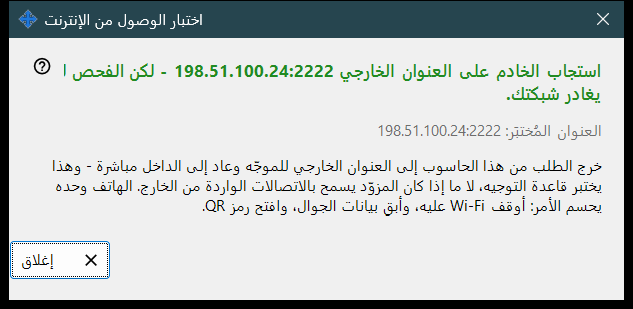
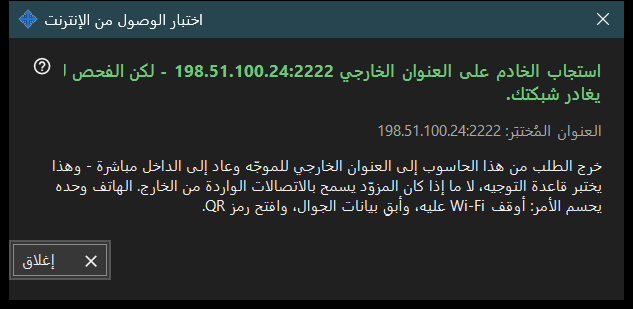

اختبار الوصول من الإنترنت
الغرض من هذه النافذة
يفحص من هذا الكمبيوتر هل يستجيب العنوان المشترك كخادم SFTP. يُفتح من زر اختبار الوصول من الإنترنت في النافذة الرئيسية ويعرض العنوان الذي يختبره والحكم والتوضيح.


بهذا الترتيب
- افتح النافذة؛ تعرض العنوان وتبدأ الفحص فوراً.
- انتظر ظهور العنوان الرئيسي للنتيجة.
- اقرأ سطر التفاصيل تحته.
- إذا لم تكن النتيجة حاسمة فكرّر الفحص من الهاتف مع إيقاف Wi-Fi وتشغيل بيانات الجوال.
- اضغط إغلاق.
عناصر النافذة
العنوان المُختبَر
العنوان المُختبَر: .. يعرض المضيف والمنفذ. أثناء الفحص تقول النافذة: اختبار .. وإذا لم يكن هناك عنوان معروف فالنتيجة: لا يوجد عنوان إنترنت بعد. أما العنوان المشوّه فيعطي: عنوان غير صالح.
الأحكام
خادم SFTP متاح - أجاب المنفذ بشعار SFTP. المنفذ مفتوح لكن لا استجابة من SFTP - هناك شيء يستمع على المنفذ لكنه ليس برنامجنا؛ تحقّق من أن قاعدة الموجّه تؤدي إلى هذا الكمبيوتر وإلى منفذ المشاركة. قد يعني إغلاق الاتصال قبل الجواب حد الاتصالات؛ جرّب مرة أخرى. وعدم وجود جواب من هذا الكمبيوتر يعني أن الموجّه قد يحجب عنوانه هو من الداخل.
لماذا قد لا تكون النتيجة حاسمة
يغادر الطلب هذا الكمبيوتر إلى العنوان الخارجي للموجّه ثم يعود مباشرة إلى الداخل، لذلك يختبر قاعدة التوجيه لا ما إذا كان مزوّد الخدمة يسمح بالاتصالات الواردة. لا يحسم الأمر إلا الهاتف: أوقف Wi-Fi فيه واترك بيانات الجوال تعمل وافتح رمز QR. فإن ظل غير قادر على الاتصال، فأعدّ توجيه المنافذ بالزر كيفية إعداد الوصول من الإنترنت.